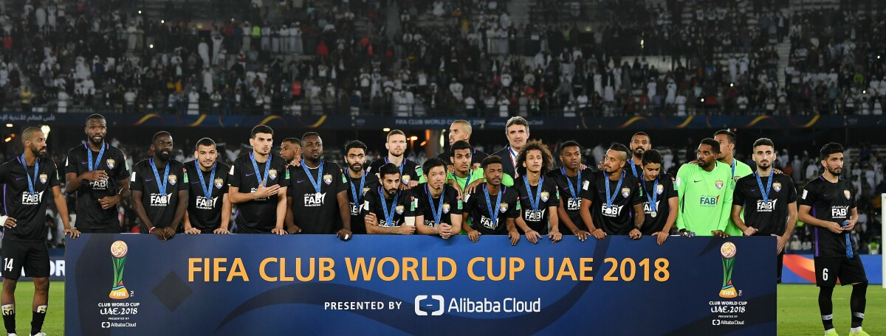
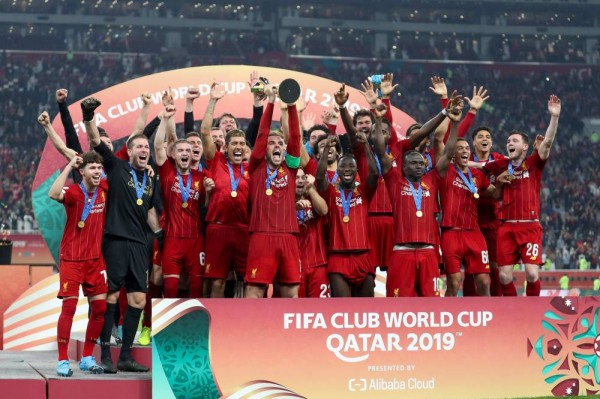
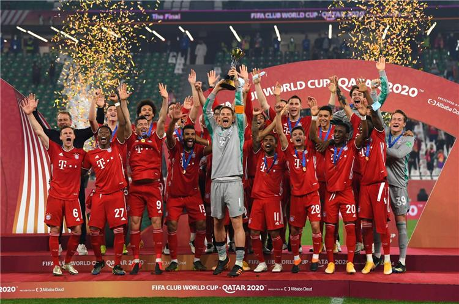

| البلد | الالقاب | الوصافة | الاندية | ||
|---|---|---|---|---|---|
| إسبانيا | 7 | 1 | ريال مدريد (4)، برشلونة (3) | ||
| البرازيل | 4 | 5 | كورينثيانز (2)، ساو باولو (1)، إنترناسيونال (1) | ||
| إنجلترا | 3 | 2 | ليفربول (1)، مانشستر يونايتد (1)، تشيلسي (1) | ||
| إيطاليا | 2 | — | ميلان (1)، إنتر ميلان (1) | ||
| ألمانيا | 2 | — | بايرن ميونخ (2) | ||
| الأرجنتين | — | 4 | — | ||
| جمهورية الكونغو الديمقراطية | — | 1 | — | ||
| الإكوادور | — | 1 | — | ||
| اليابان | — | 1 | — | ||
| المغرب | — | 1 | — | ||
| الإمارات العربية المتحدة | — | 1 | — | ||
| المكسيك | — | 1 | — |
| الاتحاد | الالقاب | الوصافة | المركز الثالث |
|---|---|---|---|
| الاتحاد الأوروبي | 14 | 3 | — |
| كونميبول | 4 | 10 | 4 |
| الاتحاد الآسيوي | — | 2 | 5 |
| الاتحاد الأفريقي | — | 2 | 3 |
| كونكاكاف | — | 1 | 5 |
| اتحاد أوقيانوسيا | — | — | 1 |
| المجموع | 18 | 18 | 18 |
سجل الابطال
- هناك سبعة لاعبين فازوا بكأس العالم للأندية ثلاث مرات وهم: ألفيس، بوسكيتس، إنييستا، ميسي، بيكيه، كريستيانو رونالدو وتوني كروس.
- يحمل كريستيانو رونالدو الرقم القياسي في عدد الأهداف المسجلة من لاعب واحد في تاريخ كأس العالم للأندية، حيث سجل سبعه أهداف، يتبعه كل من ليونيل ميسي ولويس سواريز كل منهم خمسة أهداف ثم دنيلسون وأبوتريكة حيث سجل كلاً منهم أربعة أهداف.
- يحمل لويس سواريز الرقم القياسي في تسجيل أكبر عدد من الأهداف في بطولة واحدة حيث سجل جميع أهدافه الخمسة في بطولة 2015.
- يحمل وائل جمعة الرقم القياسي في عدد المباريات التي لعبها حيث لعب 11 مباراة، يتبعه تشافي وفالديس وبويول بست مباريات.
- البرتغالي كريستيانو رونالدو هو اللاعب الوحيد الذي سجل ثلاثية (هاتريك) في نهائي البطولة، وفعلها في فوز فريقه على كاشيما أنتلرز في نهائي نسخة 2016 قاد بها فريقه ريال مدريد لنيل لقب البطولة بـ4–2.
- يظهر المدافع البرازيلي كافو بأنه اللاعب الوحيد الذي فاز بأهم 3 بطولات دولية للمنتخبات، وأهم 3 بطولات في أمريكا الجنوبية للأندية، وأهم 3 بطولات أوروبية للأندية، وبالإضافة إلى كل ذلك، كأس العالم للأندية. فقد فاز بكأس العالم مرتين مع البرازيل في 1994 و2002، وكوبا أمريكا في 1997 و1999، وكأس القارات 1997. وفاز بكأس ليبرتادوريس في 1992 و 1993، وكأس سوبر ليبرتادوريس في 1993، وريكوبا سودأمريكانا في 1993 و 1994. وفاز بدوري أبطال أوروبا في 2007 وكأس الكؤوس الأوروبية في 1995، وكأس السوبر الأوروبي في 2007، وكأس العالم للأندية في 2007.
- يحمل برشلونة الرقم القياسي في عدد مرات الانتصارات في البطولة حيث فاز في سبعة مباريات. يحمل ريال مدريد وكورنيثيانز وكاشيوا ريسول ونيكاكسا الرقم القياسي في عدد مرات التعادل حيث تعادل كلاً منهم مرتين، بينما يملك الأهلي المصري أكبر عدد من الخسارات حيث خسر 9 مبارايات.
- يحمل برشلونة رقماً قياسياً في عدد الأهداف التي سجلوها حيث سجلوا 23 هدفاً، بينما يحمل الأهلي رقماً قياسياً في استقبال الأهداف حيث استقبلوا 22 هدف. ولدى برشلونة أيضاً أفضل معدل للأهداف في تاريخ البطولة ب+20.
- بيب غوارديولا هو المدرب الوحيد الذي فاز بثلاثة بطولات كأس عالم للأندية. كل مدربي الفرق الفائزة بكأس العالم للأندية كانوا أبناء البلد الذي يقع فيه النادي الذي أداروه للفوز باستثناء السير أليكس فيرغسون ورافاييل بينيتيز وبيب غوارديولا وكارلو أنشيلوتي وزين الدين زيدان ويورغن كلوب .
ملخص فوز تشيلسي على بالميراس 2-1
قائمة الهدافين
| اللاعب | النادي | الاهداف | المباريات | المعدل | البطولة |
|---|---|---|---|---|---|
| كريستيانو رونالدو | مانشستر يونايتد ريال مدريد | 7 | 8 | 0.88 | 2008، (2014)، 2016، 2017 |
| غاريث بيل | ريال مدريد | 6 | 6 | 1.00 | 2014، 2017، 2018 |
| لويس سواريز | برشلونة | 5 | 2 | 2.50 | 2015 |
| ليونيل ميسي | برشلونة | 5 | 5 | 1.00 | 2009، 2011، 2015 |
| سيزار ديلغادو | مونتيري | 5 | 6 | 0.83 | (2011)، 2012، 2013 |
| دنيلسون | بوهانغ ستيلرز | 4 | 3 | 1.33 | 2009 |
| تسوكاسا شيوتاني | سانفريس هيروشيما العربية المتحدة العين | 4 | 9 | 0.44 | (2012), 2015, 2018 |
| محمد أبو تريكة | الأهلي | 4 | 11 | 0.36 | (2005)، 2006، (2008)، 2012، (2013) |
| رافاييل سانتوس بوري | ريفر بليت | 3 | 2 | 1.50 | 2018 |
| حمدو الهوني | الترجي الرياضي التونسي | 3 | 2 | 1.50 | 2019 |
| واين روني | مانشستر يونايتد | 3 | 2 | 1.50 | 2008 |
| نيكولا أنيلكا | ريال مدريد | 3 | 3 | 1.00 | 2000 |
| بغداد بونجاح | السد | 3 | 3 | 1.00 | 2019 |
| أندريه بيير جينياك | أونال | 3 | 3 | 1.00 | 2020 |
| ماوريسيو مولينا | سونغنام | 3 | 3 | 1.00 | 2010 |
| واشنطن سيركويرا | أوراوا رد دايموندز | 3 | 3 | 1.00 | 2007 |
| روماريو | فاسكو دا غاما | 3 | 4 | 0.75 | 2000 |
| رونالدينيو | برشلونة أتلتيكو مينييرو | 3 | 4 | 0.75 | 2006، 2013 |
| فلافيو أمادو | الأهلي | 3 | 6 | 0.50 | (2005)، 2006، 2008 |
| هيساتو ساتو | سانفريس هيروشيما | 3 | 6 | 0.50 | 2012، (2015) |
| كريم بنزيما | ريال مدريد | 3 | 8 | 0.38 | 2014، 2016، (2017)، (2018) |
| سيرخيو راموس | ريال مدريد | 3 | 8 | 0.38 | 2014، (2016)، (2017)، 2018 |
اكثر الهدافين
| العام | اللاعب | الاهداف المسجلة | المباريات الملعوبة |
|---|---|---|---|
| 2016 | كريستيانو رونالدو | 4 | 2 |
| 2017 | ماوريسيو أنتونيو كريستيانو رونالدو روماريو |
2 | 1 2 4 |
| 2018 | غاريث بيل رافاييل سانتوس بوري |
3 | 2 2 |
| 2019 | حمدو الهوني بغداد بونجاح |
3 | 2 3 |
| 2020 | أندريه بيير جينياك | 3 | 3 |
| 2021 | روميلو لوكاكو رافائيل فيغا عبد الله ديابي ياسر إبراهيم |
2 | 2 2 3 3 |
الكأس
استخدم الكأس الأصلي عندما كان اسم البطولة بطولة العالم للأندية، وذلك في عام 2000. صُنع الكأس الأصلي بواسطة شركة التصميم ساوايا وموروني التي يقع مقرها في ميلان. الكأس ملون باللون الفضي بالكامل ووزنه 4 كجم وطوله 37.5 سم وطول أوسع نقطة في قاعدته 10 سم. هذا الكأس لديه قاعدة تتكون من قاعدتان فوق بعض وتحمل أربعة أعمدة، اثنان منهم نُقش عليهما عبارة "بطولة العالم للأندية" و "الفيفا". تحمل الأعمدة كرة، وهي نموذج عن أديداس تريكولور الكرة التي استخدمت في كأس العالم 1998. كلف إنتاج الكأس 25000 دولار. عُرض أول مرة في فنادق ومنتجعات شيراتون في ريو دي جانيرو في 4 يناير 2000.
البطولة بتشكيلها الحالي تشارك اسمها مع الكأس وهو كأس العالم للأندية ويُهدى للفريق الفائز بالبطولة. كُشف عن الكأس في 30 يوليو 2005 في طوكيو، وقد صممته المصممة الإنجليزية جاين باول مع مساعدها داون فوربس بأمر من الفيفا، صممته في 2005 في محل مجوهرات توماس فاتوريني في برمنغهام، المملكة المتحدة. يزن الكأس الملون بالذهب والفضة 5.2 كجم، وطوله 50 سم. قاعدته وأوسع نقطة فيه هي 20 سم بالضبط. صُنع الكأس من عدة مواد هي: النحاس الأصفر والنحاس والفضة الخالصة والمعادن المطلية والألمنيوم والكروم والروديوم. والكأس نفسه مطلي بطلاء الذهب.
بحسب الفيفا فإن التصميم يُظهر 6 أعمدة منحنية تشير للأندية الستة من قاراتهم الستة وعمود سابع منفصل عنهم، يشير للنادي الفائز بالبطولة. تحمل هذه الأعمدة الكرة الأرضية في شكل كرة قدم، وهذا شيء مألوف بين جميع كؤوس مسابقات الفيفا تقريباً. الأعمدة الرشيقة المنحنية والقوة الكامنة في الكأس ترفع ميزات الرشاقة لدى اللاعبين وتوضح مدى الحاجة للقوة للفوز بكأس العالم للأندية. طُبع على قاعدة الكأس عبارة "كأس العالم للأندية".
سجل التهديف
1. كريستيانو رونالدو وليونيل ميسي يحملان الرقم القياسي لأكثر عدد أهداف في نهائيات البطولة. حيث سجل رونالدو أربعة أهداف في أربع نهائيات، وسجل ميسي أربعة أهداف في ثلاث مباريات نهائية .
2.يحمل لويس سواريز الرقم القياسي لأكثر عدد أهداف في بطولة واحدة. سجل خمسة أهداف في 2015 في اليابان.
3.كريستيانو رونالدو يحمل رقم قياسي كاللاعب الوحيد الذي سجل هاتريك في نهائي البطولة. حيث سجل ثلاث أهداف في عام 2016 ضد كاشيما أنتلرز.
4.لويس سواريز وكريستيانو رونالدو وغاريث بيل هم الوحيدين الذين سجلوا هاتريك في تاريخ البطولة.


